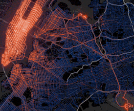

NYC taxi trip data
Twitter big data heatmap
 Twitter heatmap with topics of interest and trend aggregate markers
Twitter heatmap with topics of interest and trend aggregate markers
 Twitter heatmap with top hashtags and sentiment analysis aggregate markers
Twitter heatmap with top hashtags and sentiment analysis aggregate markers
 Bitcoin exploratory data analysis cross-plot of time vs. amount
Bitcoin exploratory data analysis cross-plot of time vs. amount
 Julia Set Quick Start example of a fractal dataset
Julia Set Quick Start example of a fractal dataset